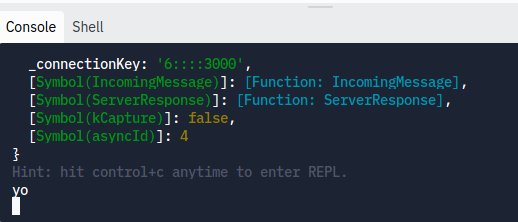

SocketIO
Au courant de cette session, nous allons explorer le pouvoir de la librairie socket.io qui permet à plusieurs navigateurs 💻📱 de communiquer entre eux.
Objectif: créer un chat! 💬
Au courant de cette session, nous allons explorer le pouvoir de la librairie socket.io qui permet à plusieurs navigateurs 💻📱 de communiquer entre eux.
Objectif: créer un chat! 💬
Avant de pouvoir commencer à créer des "jeux" en multijoueur, on va d'abord explorer ce que veut dire "multijoueur" et comment y arriver grâce à JavaScript.
Par multijoueur, on désigne des applications dans lesquelles deux utilisateurs différents peuvent interagir ensemble. Ainsi, la plupart des jeux en ligne sont multijoueurs, tout comme l'est un réseau social ou une application de chat. Comme première étape, nous allons donc créer une application de chat pour que tu puisses discuter avec tes amis en ligne!

Normalement quand on crée un programme JavaScript, on n'écrit qu'un seul programme (qui est parfois long). Cette fois-ci, on va devoir en écrire deux! En effet, il nous faut un code serveur et un code client.
Le serveur est le code qui gère nos messages, qui s'occupe de les traîter quand ils sont envoyés et qui les renvoie à ceux qui doivent les recevoir. De cette façon, le serveur est celui à qui on envoit tous les messages et le serveur va envoyer les messages à tous les autres. Les autres, ainsi que toi-même, sont des clients. Donc les clients ne communiquent directement pas ensemble. Ils communiquent d'abord avec le serveur et ce serveur communique ensuite avec tous.

On va donc créer 2 codes séparés, qui doivent tous deux être actifs pour que notre application fonctionne. Ceci ressemble un peu à ce qu'on faisait avec Discord.js, comme il fallait avoir Discord ouvert (Client) et le code allumé (Serveur)!
On va commencer par créer notre code côté serveur. Ce code va, pour les étapes d'aujourd'hui, rester très primitif. En effet, il pourra seulement capter l'arrivée de nouveaux messages. Il ne pourra pas encore renvoyer le message aux autres clients ni faire quoi que ce soit avec le message entrant. Même pour un serveur aussi primitif, il y a quelques étapes à suivre.
Tu peux déjà créer un nouveau projet Repl.it, avec le language NodeJS. Tu peux l'appeller comme tu veux, mais je te conseille d'utiliser le nom "Serveur" dedans.
On va commencer par importer quelques packages (ce sont des librairies de code directement utilisable). Pour importer un package en node.js, on utilise la syntaxe suivante:
const nomDuPackage = require('nomDuPackage');
Si on voulait utiliser le package express, par exemple, on écrirait:
const express = require('express');
Dans notre projet, on va utiliser 3 packages pour notre serveur. À toi de les importer ;-)
express: Ce package est en fait un framework pour créer des applications node.js plus facilement.http: Ce package va nous permettre d'utiliser facilement des fonctionalités du protocole HTTP.socket.io: Ce package est celui qui nous permet d'envoyer et de recevoir des messages!Attention! Tu ne peux pas déclarer const socket.io = ..., donc pour ce package, on va plutôt l'importer comme ceci:
const socket = require('socket.io');
Ensuite, on va devoir utiliser ces packages. Pour commencer, on va créer une application express, qui va être notre application principale.
const app = express();
Mais app est uniquement une application et non un serveur pour l'instant. On va donc pouvoir créer un serveur http de la façon suivante:
const server = http.Server(app);
Maintenant on a server qui est un serveur. On veut alors mettre en route ce serveur. Pour ce faire, on va faire en sorte que le serveur écoute sur un port spécifique. Qu'est ce que cela veut dire? Quand on dit qu'on serveur écoute, cela veut dire qu'il attend un message, il ne fait rien à part écouter si un client (un autre ordi) lui parle. Le port représente où il écoute, et chaque port a un nombre différent.
server.listen(/* PORT */, function() {
// ...
});
Pour le port, tu peux choisir n'importe quel nombre au delà de 1024, mais un choix assez courant est 3000. Ce que tu places dans la fonction est ce qui va se passer lorsque le serveur s'allume. Tu peux essayer de logger quelque chose!
console.log("QUELQUE CHOSE");
Super! Tu peux maintenant "Run" ton code et voir ton message apparaître dans la console.

Ton premier "Run" peut être un peu long car Repl.it doit téléchargner tes packages (express, http, socket.io)
Maintenant, on a un serveur fonctionel qui peut s'allumer et commencer à écouter. Mais on doit encore lui ajouter la fonctionalité de pouvoir recevoir des messages en temps réel. Pour ce faire, juste en dessous du const server = ..., tu peux ajouter cette ligne ci:
const io = socket(server);
Ainsi, la variable io représente notre système de recevoir et d'envoyer des messages sur le serveur.
Si tu commences ton programme maintenant, rien n'a changé car on n'a pas encore utilisé la partie io. Faisons cela!
On va commencer par simplement logger quelque chose lorsqu'un client (un utilisateur) se connecte au serveur. Pour ce faire, on utilise la fonction io.on() avec certains paramètres:
io.on('connection', function(connection) {
// ...
});
Le code // ... va s'exécuter lorsqu'une nouvelle connexion arrive. Pour l'instant, logge simplement un message indiquant l'arrivée d'un nouveau client.
Pour l'instant, cela ne change toujours rien. On va devoir créer le code client pour pouvoir ajouter des clients!
On a créé le code initial côté serveur. On va maintenant créer un code client qui va simplement se connecter au serveur pour que le serveur puisse indiquer l'arrivée d'un nouveau client.
Pour cela, on va créer un nouveau projet Repl.it, toujours dans le language NodeJS. Tu peux nommer ton projet comme tu veux, mais je te conseille d'inclure le mot "Client".
Pour le côté client, il nous faut qu'un seul package: socket.io-client
const io = require('socket.io-client');
On va alors utiliser ce package pour nous connecter au serveur. Pour ce faire, c'est très simple.
var socket = io("Lien du Serveur");
Il nous faut le lien du serveur... Pour le trouver, ouvre un nouvel onglet dans ton navigateur, ouvre Repl.it, va sur le code de ton serveur et dans la fênetre web, copies le lien. Ça c'est le lien vers ton serveur!
Tu peux maintenant allumer ton serveur. Dans un onglet ou une fenêtre séparée, tu peux allumer ton client. Si tout se passe bien, tu verras ton message disant qu'un nouveau client est arrivé dans le terminal du serveur!
Avant de pouvoir avoir une conversation entière, on va apprendre au client à envoyer un seul message. En effet, lorsqu'il se connecte, le client devra également envoyer le message "Bonjour". Le serveur devra alors afficher ce message reçu, sans savoir à l'avance que le message est "Bonjour". On pourra donc facilement changer ce message en un message quelconque plus tard.
Pour envoyer un message, le client utilise la commande socket.emit("message", "MESSAGE À ENVOYER"). Place ce code après t'être connecté au socket (à la fin de ton code client).
Il n'est pas super compliqué d'envoyer son propre message plutôt que de juste envoyer "Bonjour". Pour ce faire, on doit d'abord ajouter une interface chat, qui nous permet de lire et d'écrire dans la console. Pour ce faire, copie-colle les lignes suivantes juste au dessus de la fonction socket.emit(/* ... */)
const chat_interface = readline.createInterface({
input: process.stdin,
output: process.stdout
});
Aussi, au dessus du var socket = io(/* ... */), on doit importer une librarie qui va nous permettre de lire les messages de la console
const readline = require('readline');
Maintenant, pour envoyer un message customisé de la console, tu peux simplement faire le code suivant:
chat_interface.question("> ", function(message){
// Envoyer le message qui est stocké dans la variable "message"
});
En principe, tu peux maintenant envoyer un message du côté client. Mais on ne voit rien du côté serveur... car on n'a pas donné d'instructions au serveur pour qu'il lise les messages.
En ce moment nous ne faisons que logger un message lorsqu'un nouvel utilisateur se connecte. Repère cette partie du code:
io.on('connection', function (connection) {
console.log("il y a un nouveau client")
});
À l'intérieur de la fonction, on va ajouter une partie qui va écouter pour un nouveau message. Pour ce faire, on peut faire
connection.on('message', function(data) {
// ...
});
Ceci est une nouvelle fonction (à l'intérieur du io.on('connection', ... ), qui, après qu'un client (utilisateur) se soit connecté, écoute si ce client envoie un message.
L'argument, data, est le message envoyé. Comme on a envoyé un texte ("Bonjour"), on peut simplement utiliser data comme un texte. Donc tu peux logger "Nouveau Message: " + data lorsqu'un nouveau message arrive.
Il n'y a pas de code à ajouter pour le serveur. Ce dernier détecte déjà tous les messages envoyés et les imprime dans la console. Que le client envoie un ou 20 messages ne change rien.
Le client, par contre, ne peut envoyer qu'un seul message. C'est dommage, car tu avoueras que c'est un peu compliqué d'avoir une conversation profonde avec un seul message! Ajoutons donc la possibilité d'en envoyer plusieurs.
On va simplement créer une fonction chat() qui nous permet d'envoyer des messages. À chaque fois qu'un message sera envoyé, on fera appel à cette fonction.
function chat() {
chat_interface.question("> ", function(message){
// Envoyer le message (à toi de compléter!)
// la ligne suivante permet de recommencer la fonction chat et d'envoyer à nouveau un message:
chat();
});
}
Si tu lances ton code, tu ne pourras même pas envoyer un seul message. Par contre, si tu appelles la fonction chat(); une fois à la toute fin de ton code, tu pourras envoyer une infinité de message.
Pour rendre ton code plus correct et éviter des bugs éventuels par la suite, on va placer le dernier chat(); qui commence toute la conversation dans un socket.on('connect', /* ... */)
socket.on('connect', function() {
chat();
});
Pour l'instant, le client sait envoyer des messages au serveur. Mais notre objectif, c'est que le serveur renvoie ces messages à tous les autres clients.
Avant toute chose, connecte-toi avec 2 clients différents (ouvre 2 onglets avec ton code et lance-le code dans chancun des onglets) et vérifie que le serveur reçoit bien les messages des 2 clients en même temps.
Il se peut que tu doives lancer ton code client dans un autre navigateur (ou en navigation privée) pour que cela fonctionne.
Voyons voir maintenant comment le serveur peut renvoyer ces messages aux autres clients.
On a une partie serveur à coder, vu que le serveur doit faire quelque-chose de nouveau: renvoyer les messages reçus. Faisons donc cela.
C'est assez facile, on va utiliser la même méthode que plus tôt pour envoyer un message (socket.emit()), mais avec un io.emit()
io.emit("broadcast", data);
Ce code est à placer juste en dessous de la ligne qui logge le message reçu. Fais bien attention à placer la ligne à l'intérieur de la fonction où la variable data existe!
Maintenant on doit traîter le nouveau message reçu côté client. On va commencer par créer une fonction qui s'appelle displayMessage, qui va afficher un message.
Cette fonction est un peu compliquée donc il suffit de la copier-coller.
function displayMessage(message){
process.stdout.clearLine();
process.stdout.cursorTo(0);
console.log("~", message);
chat();
}
Ce que fait cette fonction est qu'elle efface la ligne entière, retourne au début de la ligne et imprime le message précedé d'un "~". Finalement, la fonction dit de nouveau qu'on veut lancer la fonction chat().
Maintenant on a la fonction, mais ce n'est pas tout! Il faut aussi l'utiliser!
Pour l'utiliser, ajouter dans le socket.on('connect', ...) la ligne suivante, qui va imprimer les messages reçus via "broadcast" (Donc envoyés du serveur)
socket.on('broadcast', displayMessage);
Essaie de nouveau de te connecter avec 2 clients! Tu devrais voir qu'ils peuvent maintenant communiquer!
Le seul problème est que le client imprime TOUS les messages reçus, donc il imprime aussi le message envoyé par nous même si il est déjà imprimé (Parce qu'on l'y a écrit). Pour règler cela, on va créer une variable qui s'appelle message_to_send, qui va stocker le dernier message qu'on a envoyé, et quand on imprime un message on va simplement vérifier que c'est un nouveau message.
D'abord, on va initialiser la variable
let message_to_send = "";
Ensuite, dans la fonction chat, juste avant de emit le message, on va mettre cette variable égal au message
message_to_send = message;
Finalement, on va imprimer un message que s'il est différent du notre, c'est-à-dire
function displayMessage(message){
if(message_to_send != message){
// Imprimer message comme on le faisait avant
}
}
Tu as maintenant un chat totalement fonctionel! Invites tes amis!!